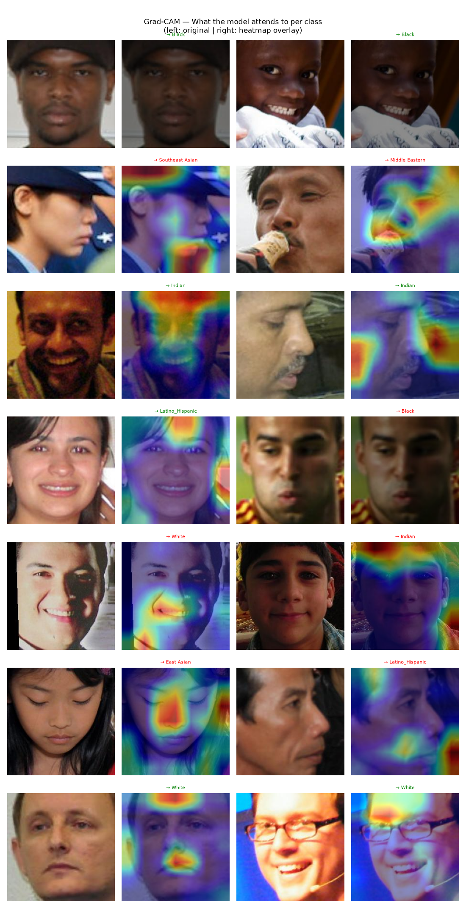

A running collection of things I've built, broken, and analyzed.

An EfficientNetB0 model trained on the balanced FairFace dataset, probing whether equal training data produces equal accuracy across racial groups. Interactive metrics, confusion matrix, and Grad-CAM explorer.